Дата: 21.11.2026. Ветка: feature/bootstrap. Объект: сервер FastAPI, веб-версия приложения (Expo web), админ-панель, публичные страницы.
Главный вывод. Демо-режим в веб-версии работает: вход в демо, обзор, вкладки, поиск и фильтрация, экран входа. Перед тестом найден и исправлен критичный дефект: экран входа падал целиком. Сервер прошёл 170 автоматических тестов, включая 26 тестов безопасности. Нагрузка на 20 одновременных пользователей прошла без ошибок, но задержка заметно растёт. Оценка: готово к показу демо на тестовом сервере; не готово к публичному запуску (см. раздел 8).
| Область | Как проверено | Результат |
|---|---|---|
| Сервер: все маршруты с магазином, права доступа, ввод, лимиты | pytest, 170 тестов (server/tests) |
170 из 170 |
| Безопасность: чужие данные (13 маршрутов на чужом магазине), SQL-подобный ввод, XSS-строки, токены, заголовки, ошибки, лимиты | tests/test_qa_security.py, 26 тестов |
26 из 26 после исправлений |
| Расчёты: золотой набор, налог, лесенка прибыли | tests/test_golden.py, test_tax.py, test_units.py |
прошли |
| Сверка UI и API: KPI обзора и лесенка прибыли демо-магазина | демо-сессия на тестовом сервере, сравнение по тиынам | совпало до тиына |
| Админ-панель в браузере (Edge, playwright-core) | docs/qa/e2e/qa_web_admin.js |
18 из 18 |
Публичные страницы в браузере: /privacy, /terms, форма удаления |
там же | прошли |
| Веб-версия приложения на телефонной ширине 390×844 | docs/qa/e2e/qa_app_web.js |
10 из 10 |
| Приложение (юнит-тесты, typecheck) | jest 19, tsc |
прошли |
| Нагрузка API: 1, 10, 20 одновременных пользователей | server/scripts/load_check.py |
см. раздел 5 |
Что не проверялось в браузере (проверено только на уровне API или не проверено): регистрация через код в интерфейсе (код уходит в журнал писем, в UI не проходили), импорт XLSX через интерфейс, скачивание выгрузок через интерфейс, экраны подписки и оплаты, удаление аккаунта в приложении, ответы помощника в интерфейсе, обновление страницы во время импорта. Нативные сборки на телефоне не тестировались.
| № | Критичность | Ошибка | Причина | Исправление | Проверка после исправления |
|---|---|---|---|---|---|
| B1 | Критичная | Экран входа падает целиком: на приветствии «Войти по email» — пустая страница | Хук Google вызывается безусловно и без идентификатора клиента выбрасывает исключение | Хук вынесен в компонент, который рендерится только при заданных идентификаторах | qa_app_web.js 10/10, ошибок консоли 0. Доказательство до исправления: evidence/B1-login-crash.txt, screenshots/evidence-B1-login-crash-before-fix.png |
| B2 | Средняя | Нет заголовков защиты (X-Content-Type-Options, X-Frame-Options, CSP, Referrer-Policy, Permissions-Policy) |
Не настроено | Middleware заголовков для всех ответов | test_qa_security.py, 4 теста |
| B3 | Средняя | Сервер запускается в продакшене с небезопасными значениями по умолчанию: пароль-заглушка для хешей подписки, CORS на localhost, вход по коду включён | Нет проверки конфигурации | При SATTI_ENV=production запуск отменяется с перечнем проблем |
тест test_no_default_secrets_in_production_mode |
| B4 | Низкая | /favicon.ico отдаёт 404 на всех веб-страницах |
Иконка не подключена | Иконка из пакета сервера | test_favicon_is_served |
| № | Критичность | Находка | Статус и рекомендация |
|---|---|---|---|
| O1 | Высокая для масштаба | Производительность: пропускная способность около 17–20 запросов в секунду, задержка растёт с числом пользователей (раздел 5). Причина: каждый запрос заново собирает все заказы магазина | Не исправлено: нужен кэш расчётов с инвалидацией при записи или агрегаты в базе. Срок — до первых реальных магазинов |
| O2 | Средняя | Секрет TOTP администратора хранится открытым текстом в базе; код 2FA можно повторить в течение 90 секунд | Не исправлено. Рекомендация: шифровать секрет ключом из окружения и запоминать последний использованный шаг |
| O3 | Средняя | Письма с кодами и о хранении пишутся только в журнал (outbox), наружу не отправляются. Вход по коду вне разработки не работает | Ожидаемо: почтовый сервис — задача 23. Вход по коду выключен в продакшене |
| O4 | Средняя | Лимиты запросов хранятся в памяти процесса: сбрасываются при перезапуске и не общие для нескольких процессов | Не исправлено. Для одного процесса достаточно; при масштабировании — общее хранилище |
| O5 | Низкая | В консоли браузера видны ответы 403 на /admin до настройки 2FA |
Ожидаемый ответ API, не ошибка. Косметика |
| O6 | Информация | Проверка входа через Apple и Google выполнена тестовыми ключами, не реальными | Нужны аккаунты владельца (задача 21) |
period, status, q, cursor, sort, filter) не вызывают 500 и не меняют базу. Запросы строятся через ORM, сырого SQL с пользовательским вводом в коде нет.Инструмент: server/scripts/load_check.py, запуск на локальном тестовом сервере с временной базой. Каждый пользователь — отдельная демо-сессия (300 заказов за 90 дней), по 15 запросов к обзору, прибыли, товарам и заказам.
| Одновременных пользователей | Запросов | Пропускная способность, запр/с | p50, мс | p95, мс | max, мс | Ошибки |
|---|---|---|---|---|---|---|
| 1 | 15 | 29.1 | 22.4 | 86.2 | 101.3 | 0 |
| 10 | 150 | 16.9 | 594.1 | 735.5 | 785.5 | 0 |
| 20 | 300 | 19.9 | 999.2 | 1224.4 | 1387.7 | 0 |
Вывод. Отказов нет. Пропускная способность не растёт с числом пользователей: один процесс обрабатывает запросы последовательно, а каждый запрос пересчитывает весь магазин (O1). Большой объём данных (тысячи заказов) не проверялся: тестовые данные демо фиксированы, а генерировать их на сервере без необходимости не стали. Цифры получены на локальной машине, не на сервере в Казахстане.
Эти ошибки были в тестах, не в приложении. Ожидания тестов не менялись; менялось то, как тест обращается к системе:
Bearer, которое есть в скрипте страницы; теперь проверяется значение токена;/login в свежей сессии не рендерит приложение; вход проверяется с приветствия.| Назначение | Оценка | Основание |
|---|---|---|
| Демо потенциальным клиентам на тестовом сервере | Готово с оговорками | Демо-вход, обзор, вкладки, поиск работают в веб-версии на телефонной ширине. Экран входа исправлен. Нужно перезапустить серверы с последним кодом и проверить на телефоне (задача 31) |
| Публичный запуск | Не готово | Открыты O1 (производительность), O3 (почта для кодов), O2 (секрет 2FA), плюс всё, что требует аккаунтов владельца: Apple и Google с реальными ключами, сервер в Казахстане, проверка покупок, сборки и чек-листы на телефонах, публикация |
Что сделать до демонстрации клиентам: перезапустить API и веб-версию с последним кодом; пройти на телефоне путь «приветствие → демо → обзор → товары → помощник»; не показывать вход по почте и экран оплаты как рабочие.
Что сделать до запуска: O1 (кэш или агрегаты), O2 (шифрование секрета 2FA), O3 (почтовый сервис), O4 (общие лимиты), проверка покупок, сборки на телефонах, юридический просмотр текстов.
docs/qa/screenshots/ — страницы /privacy, /terms, форма удаления, админ-панель после 2FA, админ-панель на 390 px, приветствие, обзор, вкладки, поиск, экран входа с ошибкой адреса, экран до исправления B1.docs/qa/screenshots/results-admin.json, results-app.json (результаты и ошибки консоли), docs/qa/evidence/B1-login-crash.txt (шаги и текст ошибки).docs/qa/e2e/ (запуск: node qa_web_admin.js и node qa_app_web.js с переменными QA_OUT, QA_OUTBOX; нужен playwright-core).docs/qa/audit-and-plan.md.server/tests/test_qa_security.py.server/scripts/load_check.py.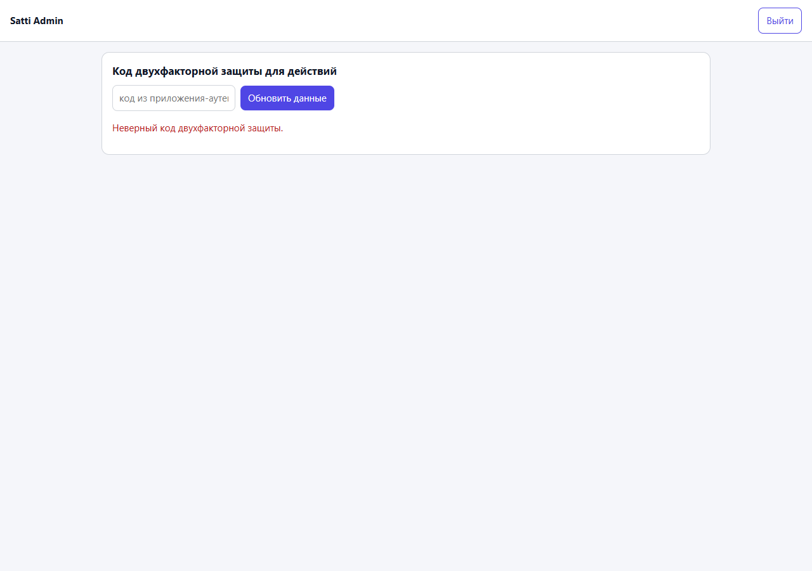
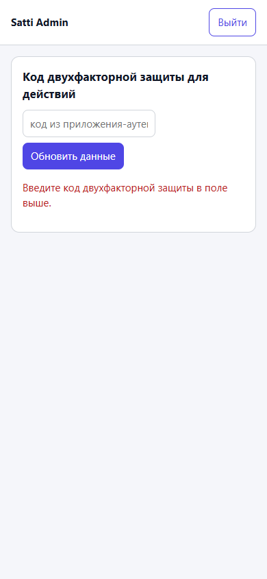
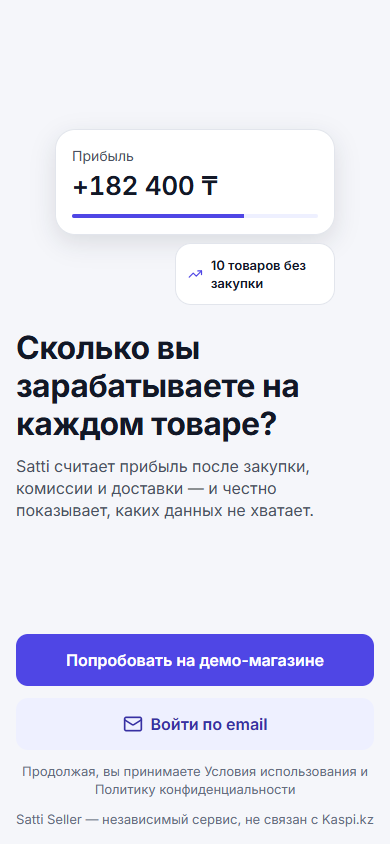
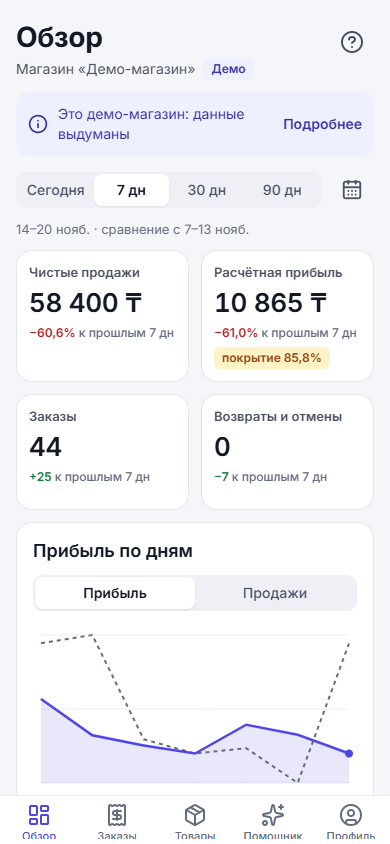
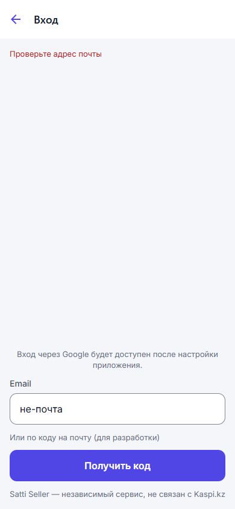
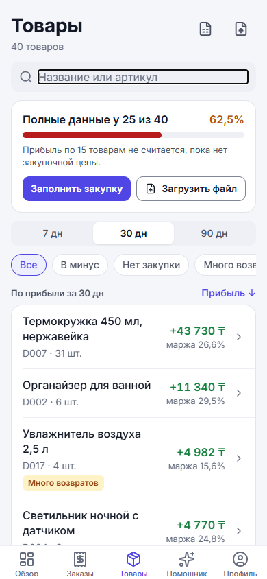
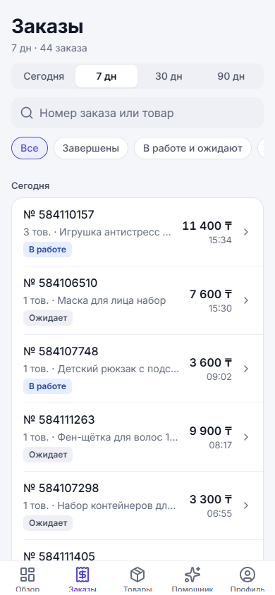
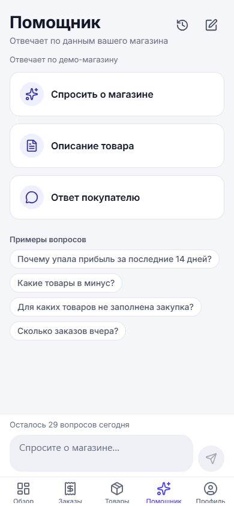
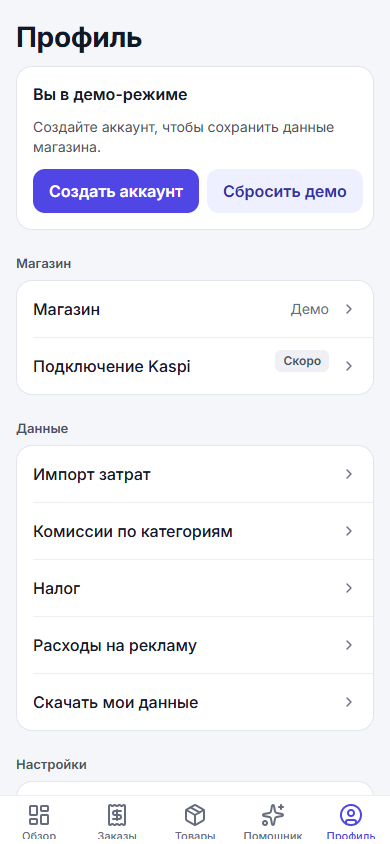
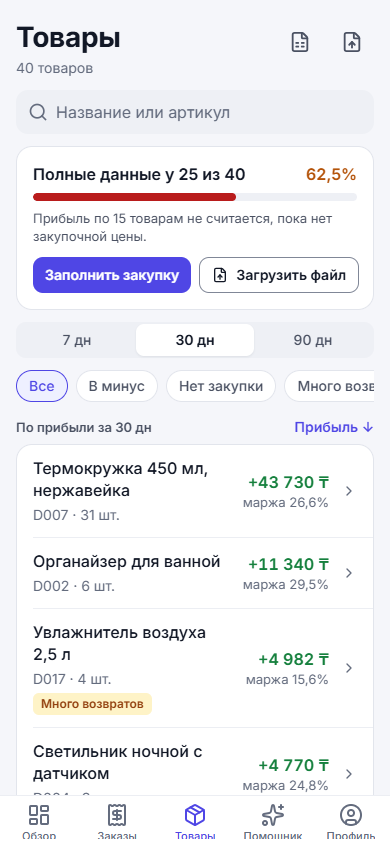
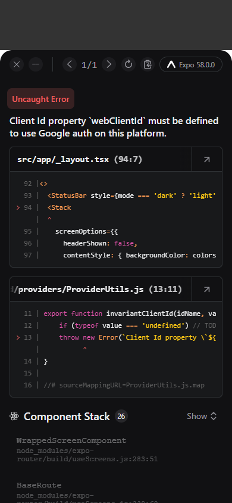
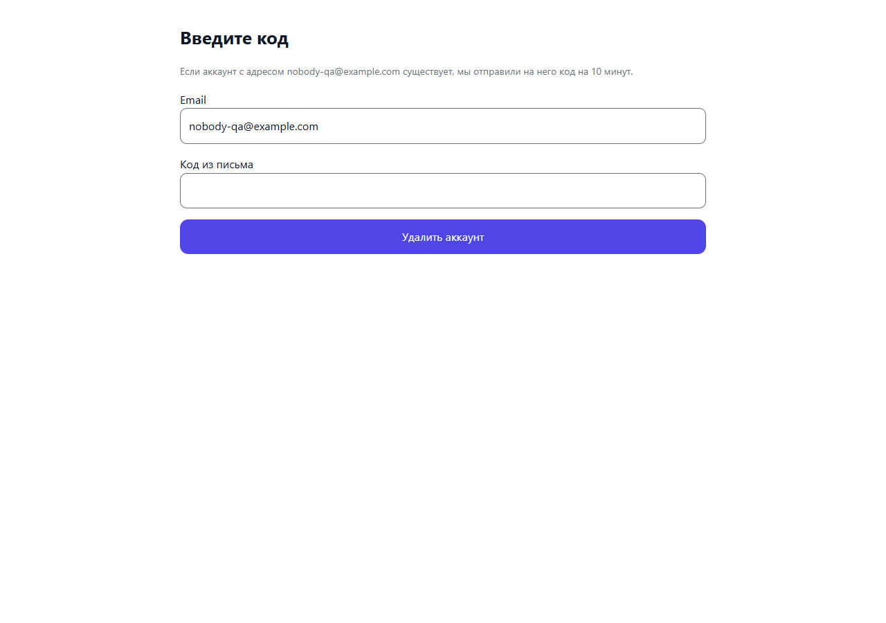
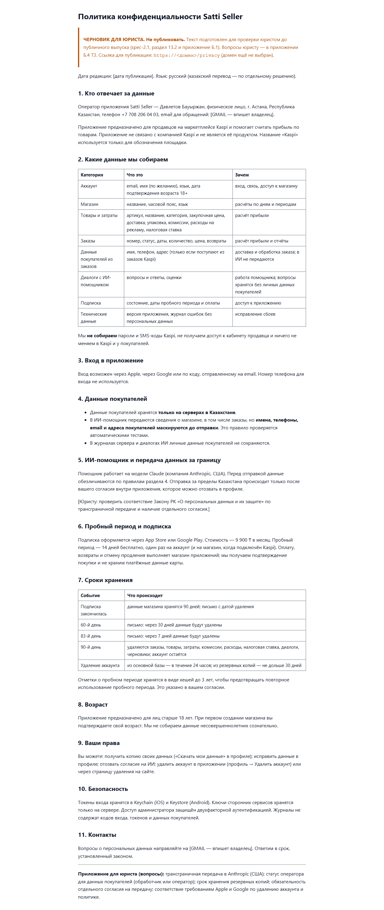
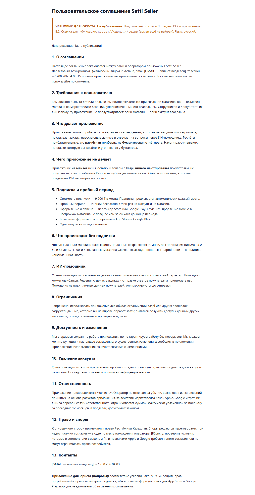